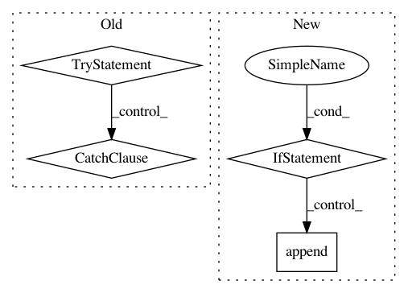

403ac880cf8f39ce63c55bc282154b5b9a7ef52a,talos/scan.py,Scan,_run,#Scan#,202
Before Change
// _model() function should return both the result from training
// and the model itself
try:
_hr_out, self.keras_model = self._model()
except TypeError:
print("The model needs to have Return in format "
" "return history, model"")
self.epoch_entropy.append(epoch_entropy((_hr_out)))
_hr_out = run_round_results(self, _hr_out)
self._val_score = get_score(self)
After Change
// create log and other stats
self.epoch_entropy.append(epoch_entropy((_hr_out)))
if self.round_counter == 0:
_for_header = create_header(self, _hr_out)
self.result.append(_for_header)
save_result(self)
_hr_out = run_round_results(self, _hr_out)
self._val_score = get_score(self)
write_log(self)
self.result.append(_hr_out)
In pattern: SUPERPATTERN
Frequency: 3
Non-data size: 4
Instances
Project Name: autonomio/talos
Commit Name: 403ac880cf8f39ce63c55bc282154b5b9a7ef52a
Time: 2018-07-27
Author: mailme@mikkokotila.com
File Name: talos/scan.py
Class Name: Scan
Method Name: _run
Project Name: NervanaSystems/nlp-architect
Commit Name: c9e73e23d952569574d23aafad6479caa5828b49
Time: 2018-05-14
Author: amit.yaccobi@intel.com
File Name: examples/np_semantic_segmentation/feature_extraction.py
Class Name: PalmettoClass
Method Name: get_pmi_score
Project Name: microsoft/nni
Commit Name: 08af7771d1f1149f3da5a98bcdbf7e65abd409ba
Time: 2020-12-27
Author: Quanlu.Zhang@microsoft.com
File Name: nni/retiarii/strategies/tpe_strategy.py
Class Name: TPEStrategy
Method Name: run